新しいタブやウィンドウを開く(window.open)
window オブジェクトの open メソッドを実行すると、新しいタブや新しいウィンドウを開いて指定した URL の Web ページを表示させることができます。また引数に指定することで、新しいウィンドウの幅や高さなどを設定することもできます。ここでは window.open メソッドを使って新しいタブやウィンドウを開く方法について解説します。
新しいタブまたはウィンドウを開く
window オブジェクトの open メソッドを実行すると新しいタブまたはウィンドウを開いて引数に指定した URL の Web ページを開くことができます。書式は次のとおりです。
let newwin = window.open(url, [name, [options]]);
一番目の引数には新しいタブまたはウィンドウで開く Web ページの URL を指定します。省略可能な二番目の引数には新しいウィンドウの名前を指定します。新しいウィンドウの window.name プロパティに設定されます。省略可能な三番目の引数にはウィンドウの幅やツールバーの有無などの追加情報を設定します。戻り値として新しいウィンドウをあらわす winodw オブジェクトを返します。
URL は http:// から始まる形式で指定もできますし、同じサイト内のページであれば相対パスでも指定できます。
let newwin = window.open('https://www.example.com/');
let newwin = window.open('subdir/sample.html');
window オブジェクトのメソッドを実行するときに window. の部分は省略可能なので次のように実行することもできます。
let newwin = open('https://www.example.com/');
let newwin = open('subdir/sample.html');
URL として空文字を指定した場合は、新しいウィンドウに空白のページが表示されます。
let newwin = open('');
なお新しいタブで開くのか、それとも新しいウィンドウで開くのかを指定する項目はありません。実際に試してみたところ、ウィンドウの幅や高さを指定した場合は新しいウィンドウで開きますが、それ以外の場合は新しいタブとして開きました。
次のサンプルを見てください。
<!DOCTYPE html>
<html lang="ja">
<head>
<meta charset="UTF-8">
<title>サンプル</title>
</head>
<body>
<p>サンプルページです。</p>
<input type="button" value="button1" id="mybtn1">
<input type="button" value="button2" id="mybtn2">
<input type="button" value="button3" id="mybtn3">
<script>
let button1 = document.getElementById('mybtn1');
button1.addEventListener('click', () => {
open('https://www.google.co.jp/');
});
let button2 = document.getElementById('mybtn2');
button2.addEventListener('click', () => {
open('test.html');
});
let button3 = document.getElementById('mybtn3');
button3.addEventListener('click', () => {
open('');
});
</script>
</body>
</html>
画面には 3 つのボタンが表示されています。それぞれのボタンをクリックすると新しいタブが開き、 open メソッドの最初の引数で指定した URL のページが表示されます。
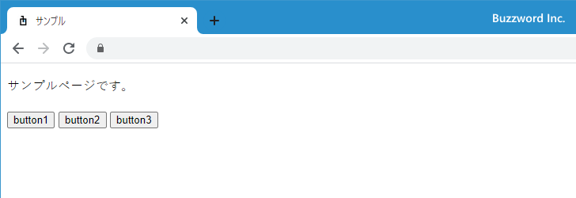
1 番目のボタンを押すと、新しいタブが開いたあと https://・・・ 形式で指定した外部サイトが表示されます。
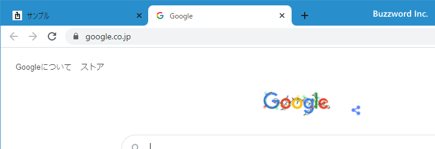
2 番目のボタンを押すと、新しいタブが開いたあと同じサイト内の相対パスで指定した Web ページが表示されます。
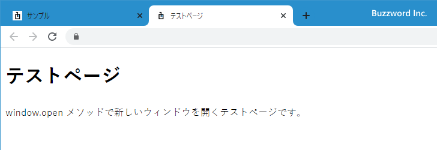
3 番目のボタンを押すと、新しいタブを開いたあと空白ページが表示されます。
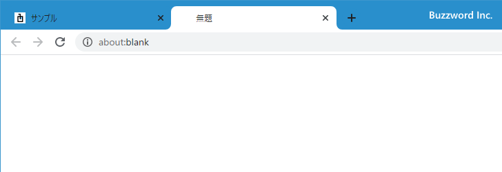
ウィンドウの名前を指定して開く
window.open メソッドの 2 番目の引数を指定すると、新しく開くウインドウの名前を設定することができます。
let newwin = open('sample.html', 'mywindow');
ウィンドウの名前を指定して window.open メソッドを実行した場合、すでに指定した名前のウィンドウが開いていた場合は新しいウィンドウが開くのではなく既存のウィンドウで指定した URL が開きます。 window.open メソッドを を実行するときに指定した名前のウィンドウが開いていなかったり、 2 番目の引数が省略された場合は新しいウィンドウが開きます。
また常に新しいウィンドウで開きたいけれど、 3 番目の引数を指定するために 2 番目の引数に名前を指定する必要がある場合もあります。この場合はウィンドウの名前として '_blank' を指定してください。常に新しいウィンドウが開きます。
let newwin = open('sample.html', '_blank');
次のサンプルを見てください。
<!DOCTYPE html>
<html lang="ja">
<head>
<meta charset="UTF-8">
<title>サンプル</title>
</head>
<body>
<p>サンプルページです。</p>
<input type="button" value="button1" id="mybtn1">
<input type="button" value="button2" id="mybtn2">
<input type="button" value="button3" id="mybtn3">
<input type="button" value="button4" id="mybtn4">
<script>
let button1 = document.getElementById('mybtn1');
button1.addEventListener('click', () => {
open('test.html');
});
let button2 = document.getElementById('mybtn2');
button2.addEventListener('click', () => {
open('test.html', 'workwindow');
});
let button3 = document.getElementById('mybtn3');
button3.addEventListener('click', () => {
open('test2.html', 'workwindow');
});
let button4 = document.getElementById('mybtn4');
button4.addEventListener('click', () => {
open('test.html', '_blank');
});
</script>
</body>
</html>
画面には 4 つのボタンが表示されています。それぞれのボタンをクリックすると open メソッドが実行されます。
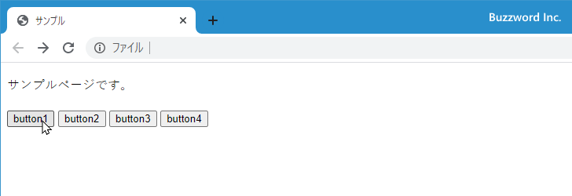
1 番目のボタンでは open メソッドの 2 番目の引数を省略しているので、ボタンをクリックするたびに新しいタブが開きます。
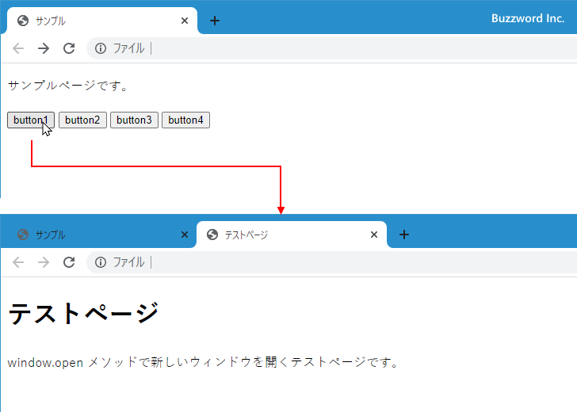
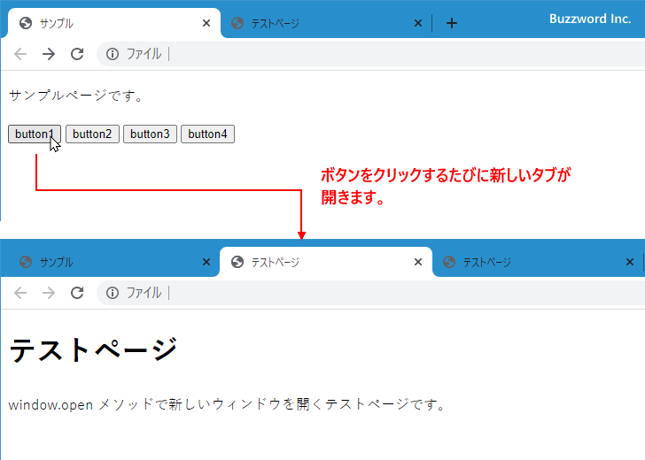
2 番目のボタンと 3 番目のボタンでは open メソッドの 1 番目の引数である URL は異なりますが 2 番目の引数に同じタブの名前を指定しています。タブがまだ開いていない状態で 2 番目のボタンを最初にクリックすると新しいタブが開きます。
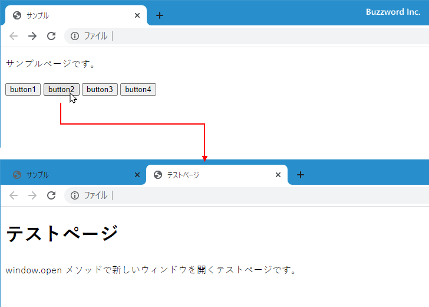
2 番目のボタンで開いたタブがまだ開いているときに、もう一度 2 番目のボタンをクリックすると、同じ名前のタブが開いているので新しいタブを開く代わりに既に開いている同じ名前のタブをアクティブにします。
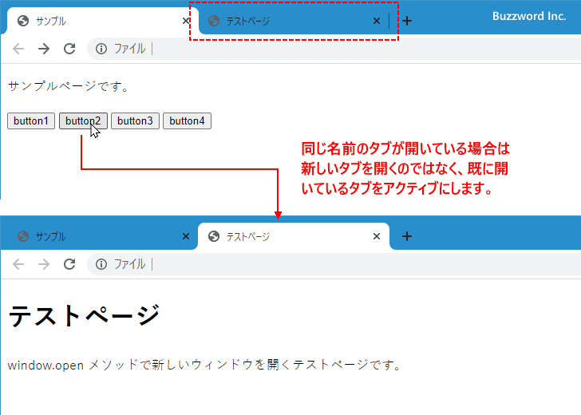
2 番目のボタンで開いたタブがまだ開いているときに 3 番目のボタンをクリックすると、 open メソッドの 2 番目の引数に指定した名前のタブが既に開いているので、新しいタブを開く代わりに既に開いている同じ名前のタブをアクティブにします。そしてアクティブになったタブで、 open メソッドの 1 番目の引数で指定した URL を開きます。
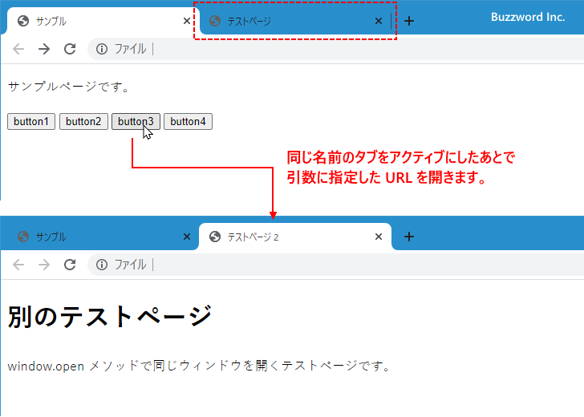
4 番目のボタンではタブの名前として特別な名前の '_blank' が指定されています。その為、ボタンをクリックするたびに新しいタブが開きます。
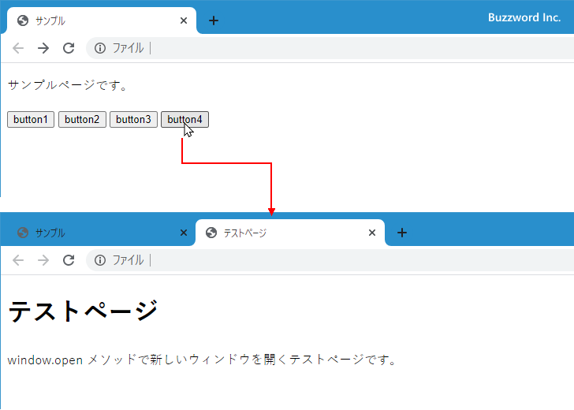
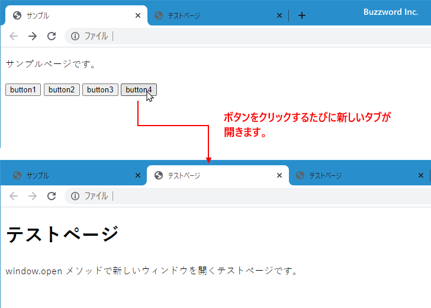
ウィンドウのサイズやツールバーの有無などを指定する
window.open メソッドの 3 番目の引数を使って、開くウィンドウのサイズやツールバーの有無などを指定することができます。複数の項目に対して 'name1=value1,name2=value2,...' のように記述した文字列を指定します。
let newwin = open('a.html', 'my', 'name1=val1,name2=val2');
設定可能な項目は次のとおりです。
left 画面左端からウィンドウ左端までの距離 top 画面上端からウィンドウ上端までの距離 width ウィンドウの幅 innerWidth 同上 height ウィンドウの高さ innerHeight 同上 menubar メニューバーの有無(yes | no) ※ toolbar ツールバーの有無(yes | no) ※ status ステータスバーの有無(yes | no) ※ location アドレスバーの有無(yes | no) ※ scrollbars スクロールバーの有無(yes | no) ※ resizable ウィンドウサイズの変更の許可(yes | no) ※ noopener 新しいウィンドウから元のウィンドウの操作を不可(yes | no) noreferrer 参照先へリンク元の情報を提供しない(yes | no)
※ Chrome 87 および Firefox 84 では設定しても反映されませんでした。
多くの設定項目がありますが、 left、 top、 width(innerWidth)、 height(innerHeight) 以外のブラウザの表示に関する設定項目については現状設定を変更しても反映されませんでした。ただし left と top については width と height が設定されている場合にのみ有効でした。セキュリティに関連する noopener および noreferrer は Chrome でも Firefox でも有効でした。
width と height を設定する場合は、次のように行います。
let option = 'width=200,height=200';
let newwin = open('a.html', 'my', option);
width と height に加えて left と top を設定する場合は、次のように行います。
let option = 'width=200,height=200,left=300,top=100';
let newwin = open('a.html', 'my', option);
それぞれの設定項目が表示されるウィンドウのどの部分に反映されるのかについては次の図を参照されてください。
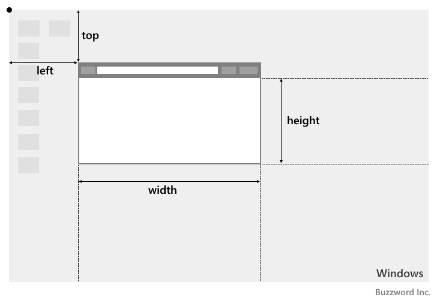
noopener と noreferrer については yes または no で設定してください。
let newwin = open('a.html', 'my', 'noopener=yes');
let newwin = open('a.html', 'my', 'noreferrer=yes');
noopener または noreferrer に対して yes を設定すると、 window.open メソッドの戻り値が null となります。その為、ウィンドウまたはタブは開きますが、元のウィンドウから新しいウィンドウに対する操作が行えません。また新しいウィンドウ側で window.opener を参照した場合も null となるため、新しいウィンドウから元にウィンドウに対する操作も行えなくなります。( noreferrer に yes を設定すると noopener も yes となる)。
次のサンプルを見てください。
<!DOCTYPE html>
<html lang="ja">
<head>
<meta charset="UTF-8">
<title>サンプル</title>
</head>
<body>
<p>サンプルページです。</p>
<input type="button" value="button1" id="mybtn1">
<script>
let button1 = document.getElementById('mybtn1');
button1.addEventListener('click', () => {
let option = 'width=300,height=300,left=200,top=200'
let newwin = open('test.html','mywindow', option);
});
</script>
</body>
</html>
画面に表示されているボタンをクリックすると新しいウィンドウが開き、指定した幅と高さ、指定した位置に表示されます。
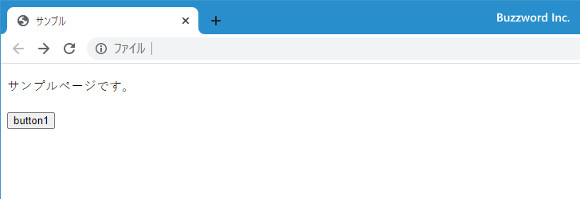
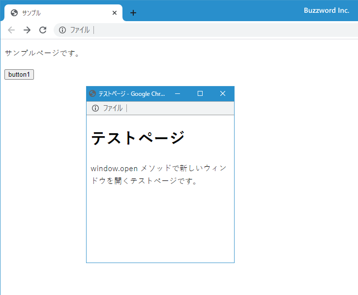
-- --
window.open メソッドを使って新しいタブやウィンドウを開く方法について解説しました。
( Written by Tatsuo Ikura )

著者 / TATSUO IKURA
初心者～中級者の方を対象としたプログラミング方法や開発環境の構築の解説を行うサイトの運営を行っています。